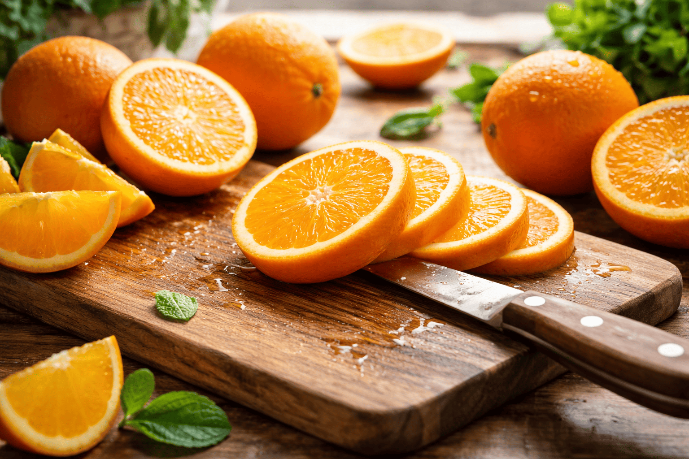
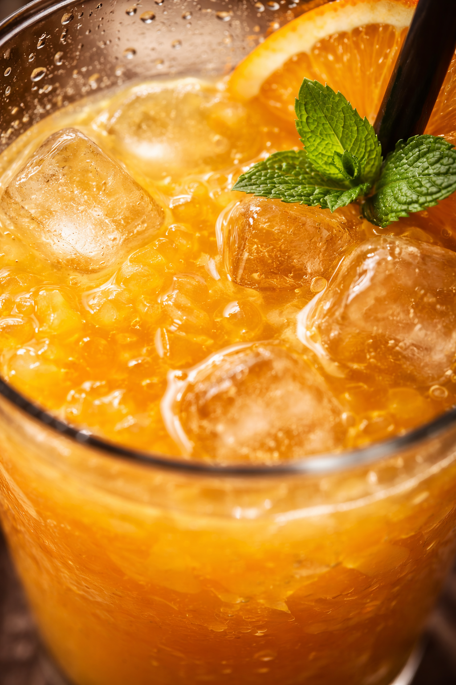

Ingrédients du jus d'orange
Préparation détaillée
⏱ 10 minLaver soigneusement les oranges à l’eau claire, surtout si elles sont bio et que tu veux garder un rendu très propre au service.
Couper les oranges en deux dans le sens de la largeur pour faciliter le pressage.
Presser chaque moitié à l’aide d’un presse-agrumes manuel ou électrique jusqu’à extraire un maximum de jus.
Filtrer le jus si tu veux une texture plus lisse, ou le garder avec un peu de pulpe pour un résultat plus naturel.
Ajouter quelques glaçons dans les verres pour un effet bien frais et désaltérant.
Verser le jus d’orange fraîchement pressé dans les verres sans trop attendre pour garder toutes ses saveurs.
Ajouter une paille, une rondelle d’orange ou une feuille de menthe si tu veux une présentation plus jolie.
Servir immédiatement bien frais, idéalement au petit-déjeuner ou au goûter.
Composition personnalisée
Ta composition : Aucune
Meilleures associations de fraîcheur
- Le Classique frais : jus pressé + glaçons + paille noire.
- Le Tropical chic : jus d’orange + menthe + rondelle d’orange.
- Le Naturel : jus avec pulpe + oranges bio bien mûres.
- Le Réveil tonique : jus d’orange + un léger trait de citron.
Checklist du jus parfait
0 / 5
Temps de préparation
Choisis un temps selon ton rythme :